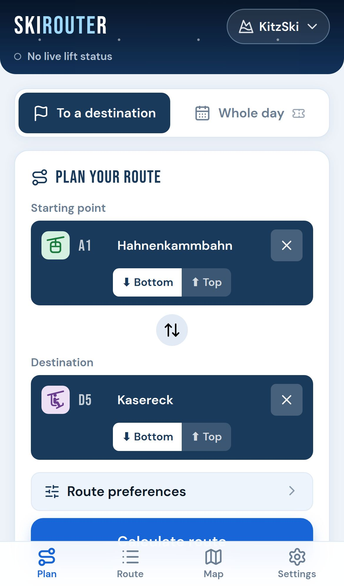

To a destination
From a lift, a hut, a village or where you stand, to where you want to be. Step by step: which lift, which piste, and which way to turn when you get off.
Pick where you are and where you want to go. SkiRouter tells you which lifts and pistes to take, in your colours and at your pace — in every European ski area, and offline on the mountain.
Free to start · No app store needed · Works on iPhone, Android and laptop
From a lift, a hut, a village or where you stand, to where you want to be. Step by step: which lift, which piste, and which way to turn when you get off.
Start, the kilometres you want to ski and when you need to be back. Lunch at a mountain restaurant, stops on the way, and up to three routes to choose from. Save your best days.
Your route on the map, numbered like the signs on the slope, following the step you are at. Turned like the piste map, or north up.
In many areas SkiRouter knows which lifts are open today and until when, warns you about closed ones and plans around them.
Open it once with a connection and the app, your ski area and your saved days stay on your phone. No signal on the mountain? It still plans.
Only blue and red? No drag lifts? Skip that one chairlift? Your preferences go with every route — and with your account, on every phone. Dark, light or extra contrast for bright snow.
Choose your ski area, then plan a route to a destination or a whole day. A day shows its options right away: pick the one you like.
Every lift and piste in order, with the way to turn off each lift. Tick them off as you go; running late, replan from where you are.
The same route on the map, the step you are at in yellow. Switch to an earlier route or a saved day from the bar at the top.


€0
€9.99 per winter
SkiRouter is a web app: no app store, no download of hundreds of megabytes. Add it to your home screen and it opens full screen with its own icon, like any other app — and works offline.
Don't see "Add to Home Screen"? Tap Edit Actions at the bottom of the share menu and add it.
Samsung Internet: menu ≡ → Add page to → Home screen.
Plan your days at home on the big screen; with an account they are on your phone too.
Open the app once with a connection, and open your ski area once before you go: then everything works without a signal on the mountain.
Every European ski area in OpenStreetMap with at least 5 lifts and 10 km of pistes — from the big Alpine areas to smaller ones in Scandinavia and Eastern Europe. The map data comes from the OpenStreetMap community.
Yes. Once opened with a connection, the app and every ski area you opened stay on your phone. Live lift status needs a connection; without one you see the last status you had.
It is a web app: it runs in your phone's browser, and from the home screen it opens full screen like any other app. No store, no updates to install — you always have the latest version.
In the full guide: every tab and button, with screenshots.
Routes, times and lift status come from open map data and the ski areas themselves, and can be incomplete or out of date. They are a guide: always follow the signs, closures and the ski area's staff, and ski within your ability.
€9.99 for one winter season (until 30 June), paid once with iDEAL, Bancontact, card or other methods via Mollie. It is not a subscription: there is nothing to cancel.